BIOS 25328 · Lecture 7
2026-04-13
In this lecture we will learn about Polygenic Risk Scores (PRS) — how they are constructed, evaluated, and applied in research and clinical settings.
\[Y = \sum_{k}^{M} X_k \cdot \beta_k + \epsilon\]
Can also include covariates (sex, age, etc.):
\[Y = \text{covariates} + \sum_{k}^{M} X_k \cdot \beta_k + \epsilon\]
Can we fit all SNPs at the same time?
\[Y = \mu + a \cdot \text{age} + \beta_1 X_1 + \beta_2 X_2 + \dots + \beta_{1{,}000{,}000} X_{1{,}000{,}000}\]
Why can’t we estimate betas by least squares (ordinary linear regression)?
Too many parameters and too few observations
10 data points per parameter
In a pinch, at least 5 data points per parameter
Assume \(\beta_k \sim N(0, \sigma_\beta^2)\) and estimate just the variance \(\sigma_\beta^2\)
\[\text{From millions of } \beta_k \text{ parameters} \longrightarrow \text{1 variance parameter}\]
* This is one form of regularization — more on this later
\[Y = \text{fixed effects} + \text{random effects} + \text{noise}\]
\[= \text{fixed effects} + \sum_k \beta_k X_k + \epsilon\]
\(\beta_k\)’s are random
\[\beta_k \sim N(0, \sigma_\beta^2)\]
** this is one form of Regularization, more on this later
Recall the mixed effects approach used to correct for population structure:
\[Y = X_{\text{test}} \cdot \beta_{\text{test}} + u + \epsilon, \quad u \sim N(0, \sigma^2 \cdot \mathbf{K})\]
The random effect \(u\) is equivalent to the sum of all SNP effects:
\[Y = X_{\text{test}} \cdot \beta_{\text{test}} + \sum_k X_k \beta_k + \epsilon\]
\[X = \begin{bmatrix} x_1 \\ x_2 \\ \vdots \\ x_M \end{bmatrix} \qquad \|X\|_2 = \sqrt{\sum_k x_k^2}\]
Our familiar Euclidean distance of a vector.
In a GWAS we find one SNP at a time:
\[\mathbf{Y} = \mu + a \cdot \mathbf{age} + \beta_1 \cdot \mathbf{X} + \epsilon\]
Find \(\mu, a, \beta_1\) that minimizes:
\[\|\mathbf{Y} - \mu - a \cdot \mathbf{age} - \beta_1 \cdot \mathbf{X}\|_2^2\]
\[= (y_1 - \mu - a \cdot \text{age}_1 - \beta_1 x_1)^2 + (y_2 - \mu - a \cdot \text{age}_2 - \beta_1 x_2)^2 + \cdots\]
Option 1:
\[= (y_1 - \mu - a \cdot \text{age}_1 - \beta_1 x_1)^1 + (y_2 - \mu - a \cdot \text{age}_2 - \beta_1 x_2)^1 + \cdots\]
Option 2:
\[= |y_1 - \mu - a \cdot \text{age}_1 - \beta_1 x_1| + |y_2 - \mu - a \cdot \text{age}_2 - \beta_1 x_2| + \cdots\]
Prediction of complex traits can help us better tailor treatment of patients.
\[Y = \sum_{k=1}^{M} \hat{\beta}_k^{\text{GWAS}} X_k\]
Just use GWAS effect sizes — the seemingly naive approach yields better prediction than expected.
\[\left\|Y - \sum_k X_k \beta_k\right\|_2 + \lambda_1 \|\beta\|_1 + \lambda_2 \|\beta\|_2\]
Best Linear Unbiased Prediction (BLUP) / Ridge
\[Y = \sum_{k=1}^{M} \hat{\beta}_k^{\text{Ridge}} X_k\]
Penalized regression \(\longrightarrow\) Ridge
\[\left\| Y - \sum_k X_k \beta_k \right\|_2 + \lambda_2 \|\beta_2\|_2\]
LASSO/Elastic Net Prediction
\[Y = \sum_{k=1}^{M} \hat{\beta}_k^{\text{E-N}} X_k\]
Penalized regression \(\longrightarrow\) LASSO and Elastic Net
\[\left\| Y - \sum_k X_k \beta_k \right\|_2 + \lambda_1 \|\beta\|_1 + \lambda_2 \|\beta_2\|_2\]
\[Y = \sum_{k=1}^{M} \beta_k^L X_k + \sum_{k=1}^{M} \beta_k^S X_k + \epsilon\]
\[\beta_k^L \sim N(0, \sigma_L^2) \quad \text{(polygenic: many small effects)}\] \[\beta_k^S \sim N(0, \sigma_S^2) \quad \text{(sparse: few large effects)}\]
Main advantage: easy to obtain and scalable
vs. multivariate approaches (ridge, elastic net, BSLMM):
Methods that incorporate LD structure into PRS:
| Method | Reference |
|---|---|
| PRSice (pruning + thresholding) | Choi & O’Reilly |
| Lasso-sum | Mak et al. 2017 |
| LDPred | Vilhjálmsson et al. 2015 |
| RSS | Zhu & Stephens 2017 |
| S-BayesR | Lloyd-Jones et al. 2019 |
| PRS-CS | Ge et al. 2019 |
RSS and S-BayesR are likelihood-based methods with different priors on βs.
“In all, over the range of traits evaluated in this study, CNN performance was competitive to linear models, but we did not find any case where DL outperformed the linear model by a sizable margin.”
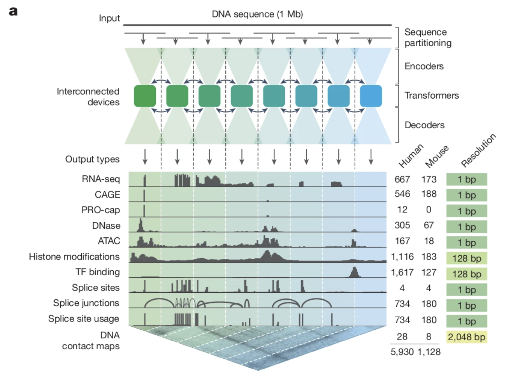
An important question is whether PRS predictions have clinical utility.
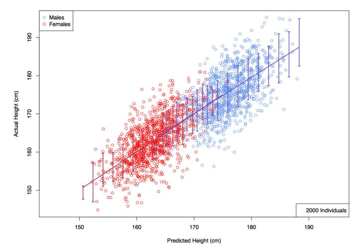
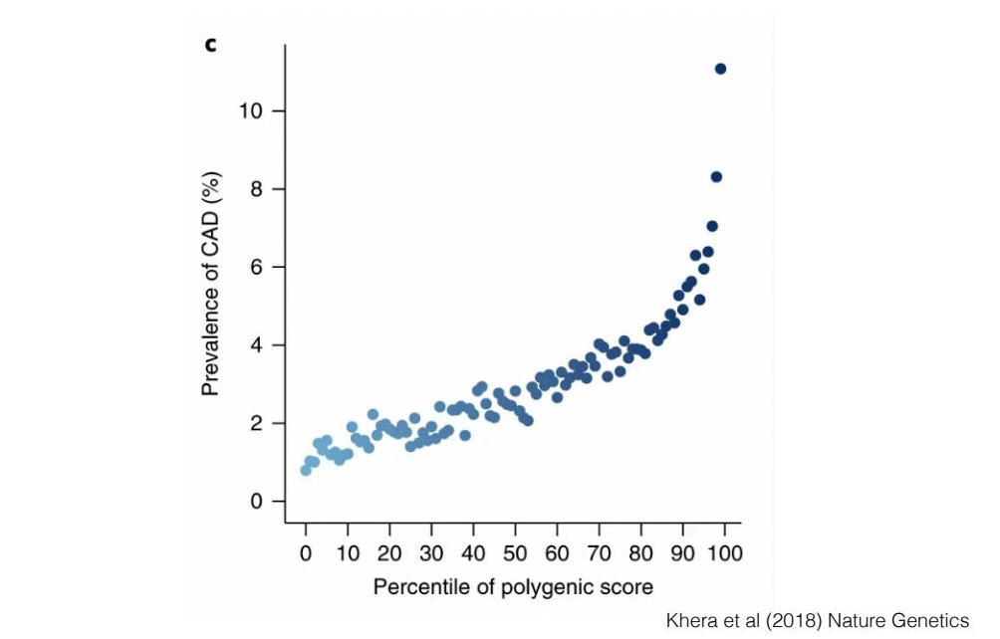
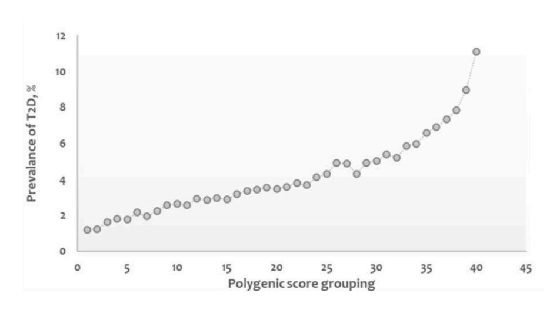
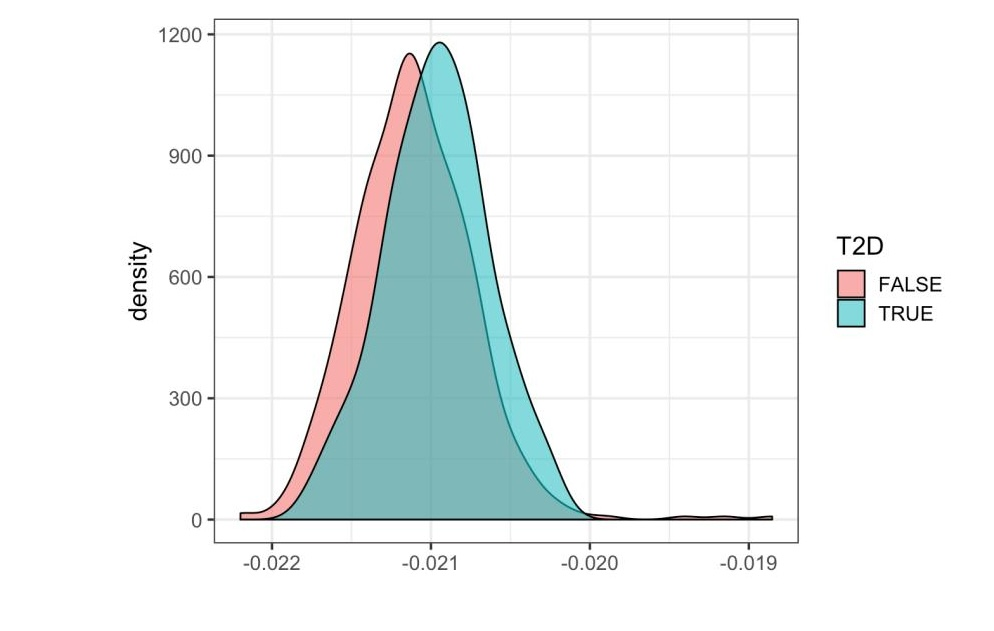
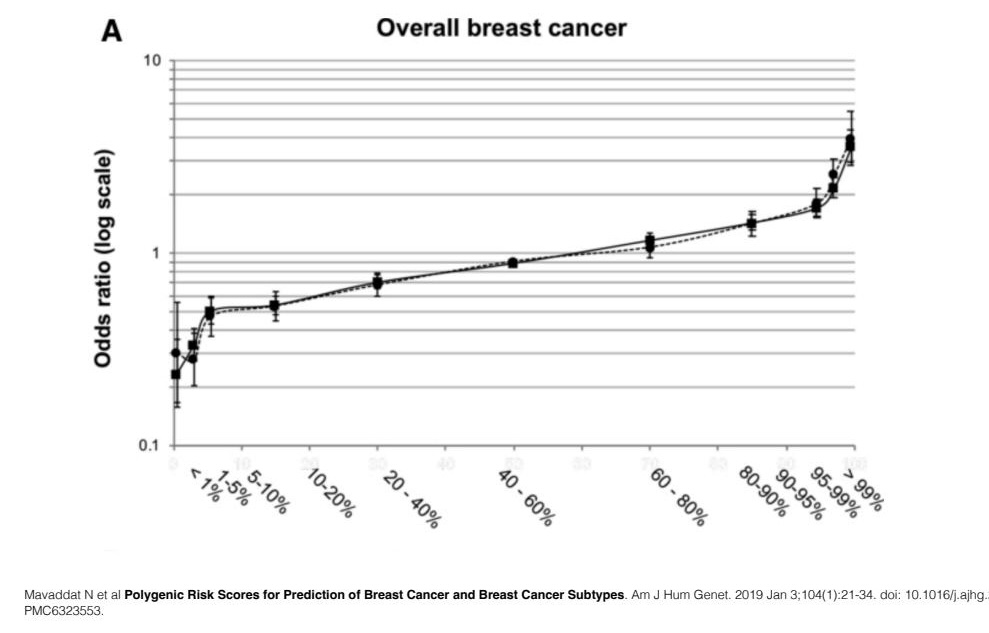
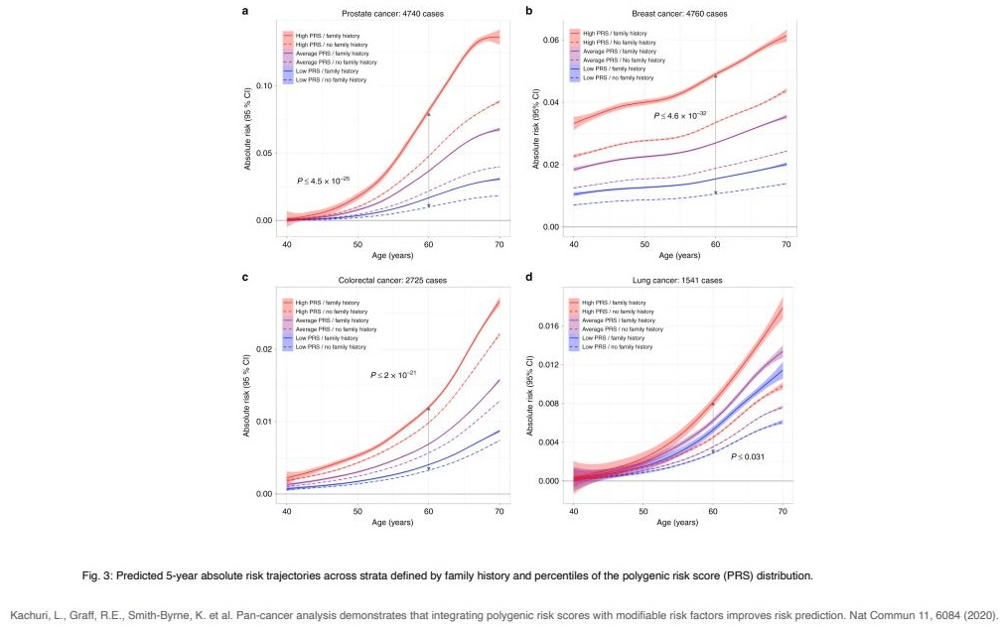
Current GWAS data is mostly collected in European-descent individuals
PRS performance deteriorates with genetic distance from EUR training data, due to:
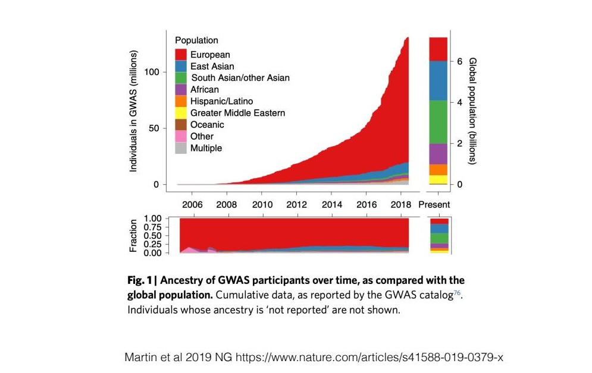
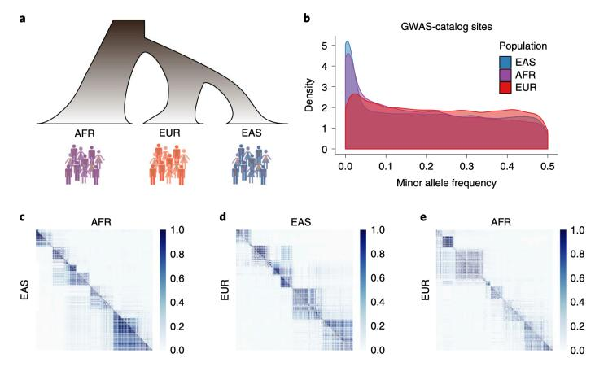
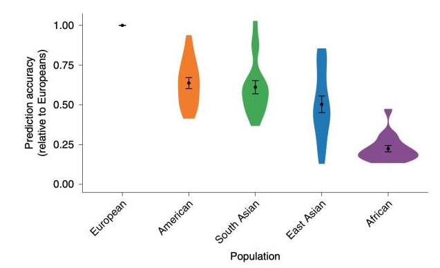
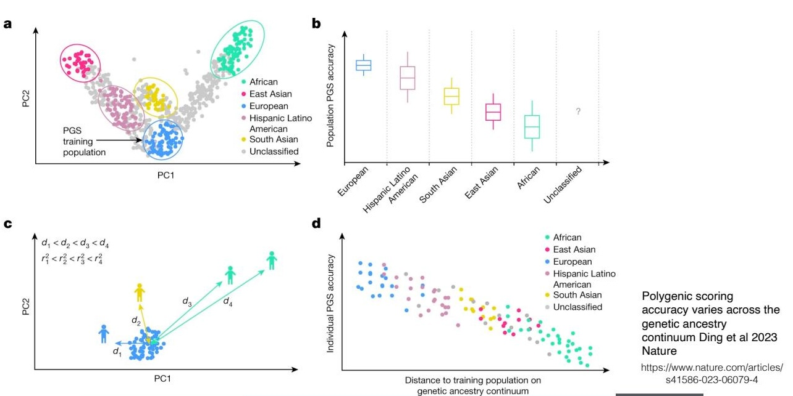
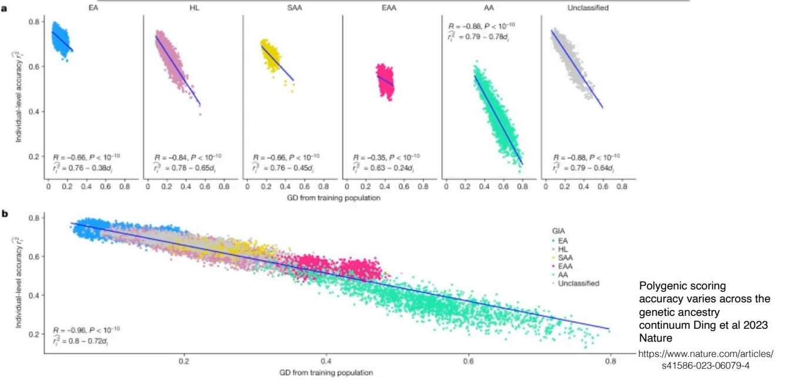
Key findings:
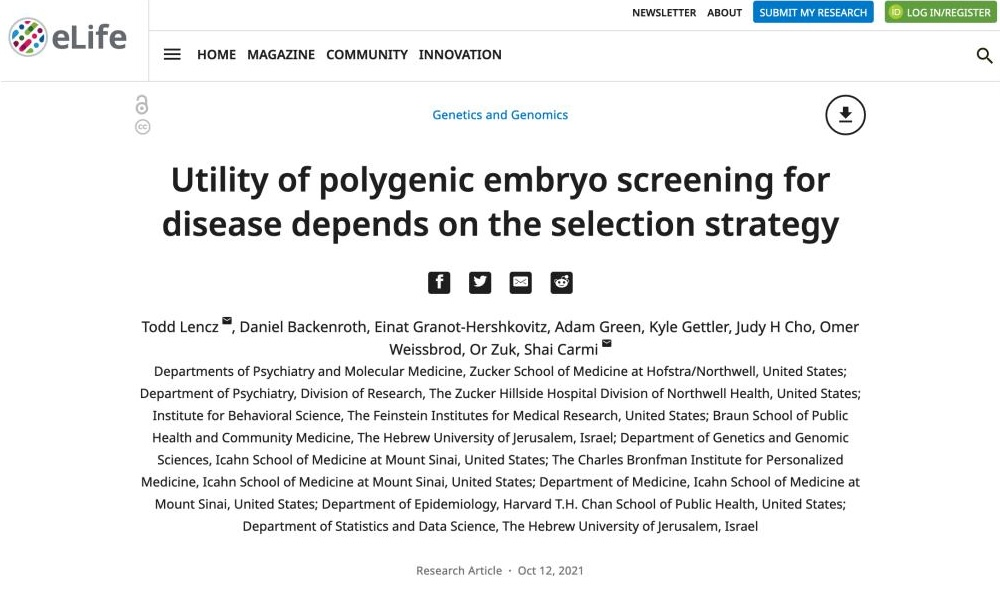
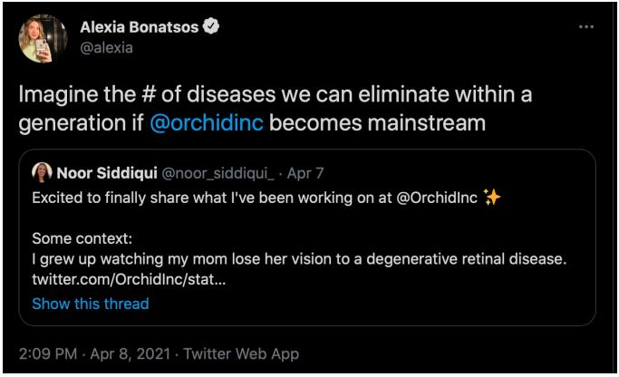
Are they helping eliminate disease — or implementing eugenics?
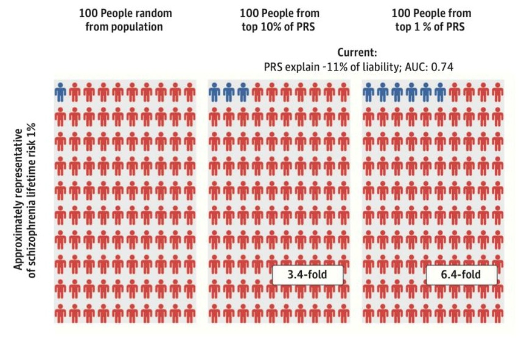